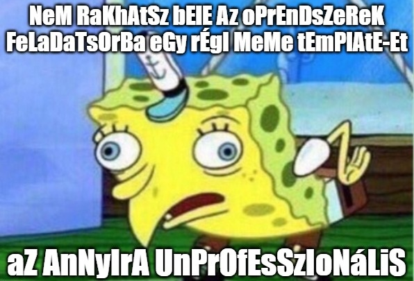

A feladatsorhoz tartozó bemeneti fájlok letölthetők ide kattintva.
Megoldás: A feladatsor egy lehetséges megoldása letölthető ide kattintva.
A 01_users.csv fájl Discord felhasználók adatait tartalmazza. Az egyes sorokban szereplő, pontosvesszővel elválasztott adatok rendre: a felhasználó neve, szakja és állapota.
Írj AWK szkriptet 1.awk néven, amely a paraméterben érkező fájlból kiíratja a mernokinfo szakos felhasználók felhasználónevét és állapotát, kötőjellel elválasztva! Ügyelj arra, hogy a mernokinfo szöveg nem csak a szakok között fordulhat elő a fájlban!
Példa a szkript működésére:
> ./1.awk inputs/01_users.csv Float - elfoglalt szte2k – online
Márk szereti a macskákat, ezért a számítógépén is tárol macskás videókat. A 02_contents.txt állomány tartalmazza az ls -l parancs kimenetének egy részét, mégpedig Márk mappáinak és fájljainak az adatait. Ezek közül szeretnénk kiválogatni a macskás videók neveit az alábbi szempontok szerint:
ls -l kimenetében az 1. oszlop kötőjellel kell, hogy kezdődjön (hiszen fájlokról van szó) ÉSmacska szöveggel kell kezdődnie, ami után tetszőleges mennyiségű (akár 0 darab) betű/számjegy/alulvonás/pont karakter szerepelhet, majd ezután a .mp4 szöveg jelzi a fájlnév végét.Írj AWK szkriptet 2.awk néven, amely kiíratja a paraméterben kapott fájlból a fenti szempontok alapján megtalált macskás videók nevét! Azt is írasd ki, hogy hány ilyen videót talált a szkripted!
Példa a szkript működésére:
> ./2.awk inputs/02_contents.txt macska.mp4 macska123.mp4 macska_01.cute.mp4 macska_jancsi.mp4 ----------------------------------- 4 macskas videot talaltam.
A 03_scores.csv állomány egy online játék aktuális állását tartalmazza. A fájl soraiban szereplő, pontosvesszővel elválasztott adatok rendre: a játékos neve, országa és pontszáma.
Írj AWK szkriptet 3.awk néven, amely összeadja a paraméterben kapott fájlból azoknak a játékosoknak a pontszámát, akiknek a neve a következőképpen épül fel:
[admin] szöveg (tehát vagy szerepel, vagy nem)A szkript kimenete a fenti szempontoknak megfelelő névvel rendelkező játékosok összpontszáma.
Példa a szkript működésére:
> ./3.awk inputs/03_scores.csv 102250
Írj AWK szkriptet 4.awk néven, amely kiírja a paraméterben kapott állományból azokat a szavakat, amelyek:
Példa a szkript működésére:
> ./4.awk inputs/04_post.txt KEDVES FERENC! VELEMENYEM VAN, HALALLAL BUNTETHETO. LATOTT MEG IS HALADJA SEMMI
Ki ne emlékezne az alábbi meme template-re és annak jellegzetes szövegformátumára?

Írj AWK szkriptet 5.awk néven, amely egy több soros szöveges fájlt kap paraméterül, amelynek minden sora szóközzel elválasztott szavakat tartalmaz! A szkript írja ki a fájl tartalmát úgy, hogy a kis- és nagybetűk felváltva kövessék egymást (mint ahogy az a fenti képen látható)!
Példa a szkript működésére:
> ./5.awk inputs/05_rick_roll.txt NeVeR gOnNa GiVe YoU uP NeVeR gOnNa LeT yOu DoWn NeVeR gOnNa RuN aRoUnD aNd DeSeRt YoU NeVeR gOnNa MaKe YoU cRy NeVeR gOnNa SaY gOoDbYe NeVeR gOnNa TeLl A lIe AnD hUrT yOu
A 06_points.csv állomány az Operációs rendszerek gyakorlaton megíratott 1. ZH eredményeit tartalmazza. Minden sorban egy-egy csoport hallgatói által elért pontszámok találhatók, pontosvesszővel elválasztva.
Írj AWK szkriptet 6.awk néven, amely meghatározza a paraméterben kapott fájl alapján...
Példa a szkript működésére:
> ./6.awk inputs/06_points.csv A(z) 1. csoport atlaga: 10.12 pont A(z) 2. csoport atlaga: 9.00 pont A(z) 3. csoport atlaga: 15.00 pont A(z) 4. csoport atlaga: 10.89 pont A(z) 5. csoport atlaga: 11.67 pont ------------------------------------------- A legjobb csoportatlag: 15.00 pont Az osszes pontszam atlaga: 12.05 pont
Írj AWK szkriptet 7.awk néven, amely egy olyan fájlt kap paraméterben, ami az ls -l parancs egy kimenetét tartalmazza! A program írja ki a 9. oszlopban található állománynevek alapján, hogy az egyes kiterjesztésekből mennyi fordul elő! A feladat megoldása során használj tömböt (tehát ne csak a példainputban szereplő kiterjesztésekre működjön jól a szkripted)!
A kiterjesztést a kis- és nagybetűktől függetlenül vizsgáld (tehát pl. file1.txt és FILE2.TXT ugyanúgy txt kiterjesztésűek)! A program kimenetében minden kiterjesztés csupa kisbetűkkel szerepeljen!
Az egyszerűség kedvéért feltesszük a következőket:
fajlnev.kiterjesztes).Példa a szkript működésére:
> ./7.awk inputs/07_files.txt 1 darab csv fajl 3 darab awk fajl 4 darab txt fajl 2 darab sh fajl
A 08_results.csv fájl egy középiskolai matematikai csapatverseny adatait tartalmazza. Minden sorban 3 adat szerepel pontosvesszővel elválasztva: rendre a versenyző neve, a versenyző csapatának neve, valamint a versenyző által elért egyéni pontszám.
Írj AWK szkriptet 8.awk néven, amely összeszámolja, hogy a bemeneti fájlban az egyes csapatok hány pontot értek el (tehát össze kell adni az adott csapatban versenyző diákok pontszámait), majd kiírja, hogy melyik csapat érte el a legtöbb pontot! A feladat megoldása során használj tömböt (tehát ne csak a példainputban szereplő csapatnevekre működjön jól a szkripted)!
A feladat megoldása során figyelj a következőkre:
kalkulustak és Kalkulustak ugyanaz a csapatnév)! A kiíratásban a csapatnév csupa nagybetűkkel szerepeljen!Példa a szkript működésére:
> ./8.awk inputs/08_results.csv OSZTALYELSO TAN(ULOK) csapat pontszama: 200 NEGYOLDALAS TETELBIZONYITAS csapat pontszama: 150 KALKULUSTAK csapat pontszama: 270 ALGEBRUH csapat pontszama: 42 3.14RATES OF THE CARIBBEAN csapat pontszama: 100 PITAGORASZ JOBBKEZEI csapat pontszama: 100 ------------------------------------------------- A legtobb pontot elero csapat: KALKULUSTAK